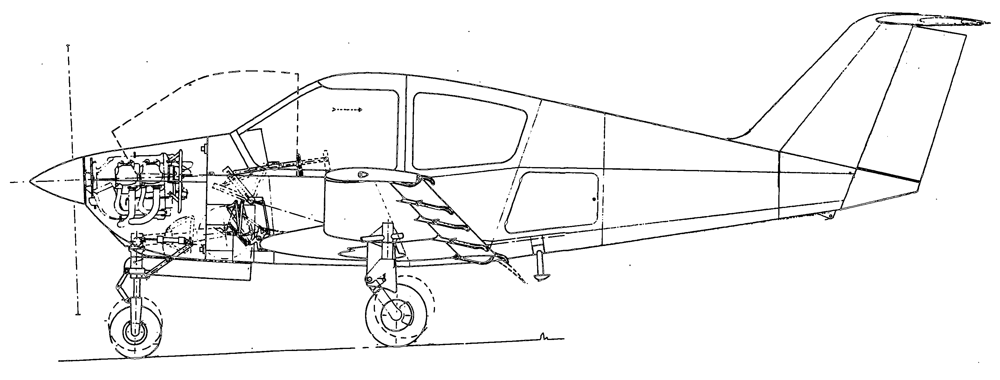

In 1979, I finished a step in the undergraduate curriculum which was mandatory in Delft at the time : a preliminary design of an aircraft. My assigment was a 200 hp, 4-seat tourer. The gist of the exercise was that the requirement was always a bit beyond the current state of the art. In this case, all requirements (take-off and landing distance over a 50 ft obstacle etc.) were standard for similar aircraft like the Piper Cherokee Arrow or the Mooney 201, but the cruise speed was about 10 mph higher, if I remember correctly.
The design reference was the book by Torenbeek, colloquially known as the "Torenbook". This handbook was geared towards airliners, not light aircraft, and the Imperial measurement system was a disaster. But it had good statistical data, based on sensible dimensional analysis, and as such it is still a good reference.
The only way to meet the requirements was to give the wing a lower wetted area by an elaborate high-lift system for take-off and landing. The internet was nowhere in sight at the time, so I had to glean tidbits of information from aviation magazines, combined with cycling visits to local airports.
I decided to go for the new, thick GAW-1 airfoil with full span Fowler flaps and roll control by spoilers opening up the flap gap. I believe this had the unfortunate tendency of lowering the downgoing wing without lifting the other one, with the disconcerting side effect that an "aileron" input would cause height loss on approach.
Even so, I had to squeeze out every bit of optimization. The one that I felt most sorry about was shortening the tail, which just did not look right to me. This was a fine example of "rule cheating" or "designing to the test". I did not believe Torenbeek's equation for the fuselage drag, but I had to make the grade. I did what I could to spice up the looks. The side view below shows the result.
The design gained me that year's $500 prize for the best project report. The professor who handed out the prize joked to me that we all know that there are far easier ways to earn $500, like working as a supermarket cashier. How right he was...
